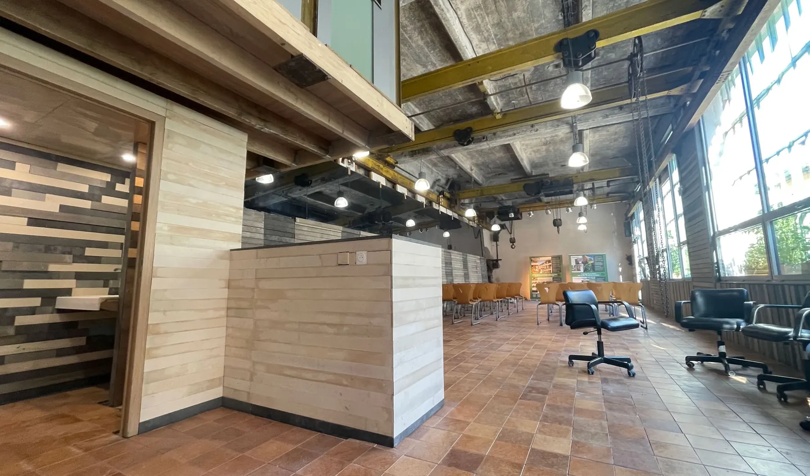
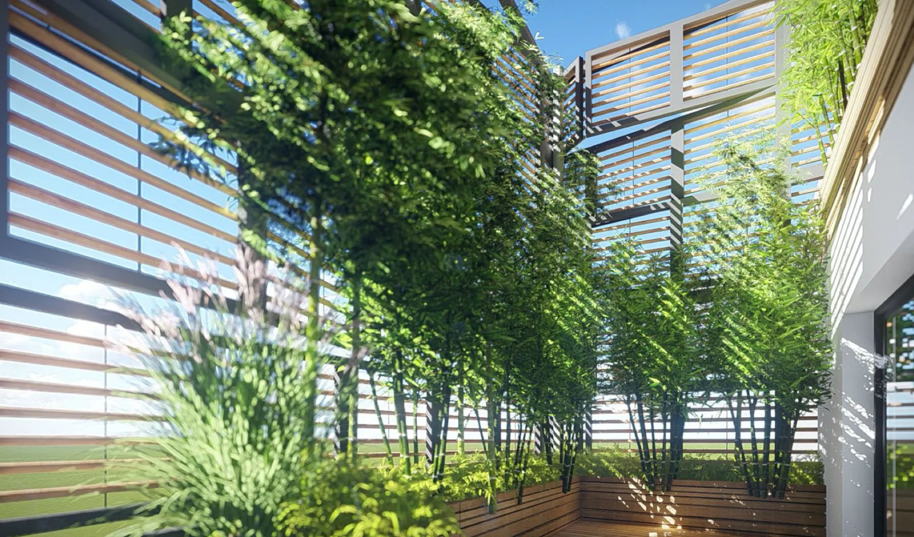

Agile
Des espaces qui s’adaptent aux besoins changeants avec un minimum de travaux : un logement qui devient bureau, un lieu utilisé jour et nuit. La longévité est notre premier levier contre le carbone.


Agence d’architecture — Vienne, Isère
Manifeste
La construction d’un bâtiment n’est qu’un bref moment dans l’ensemble de son cycle de vie. Mais, tout comme la conception d’un enfant, c’est l’instant décisif où l’ADN de ce nouvel organisme est transmis. Il ne s’agit pas de créer des objets de design achevés, mais de donner naissance à des espaces flexibles et vivants.
 Patrick Stefan Rheinert
Patrick Stefan RheinertQuatre principes
Des espaces qui s’adaptent aux besoins changeants avec un minimum de travaux : un logement qui devient bureau, un lieu utilisé jour et nuit. La longévité est notre premier levier contre le carbone.
Des lieux de rencontre et d’entraide, intergénérationnels et à échelle humaine, où chacun devient co-créateur de son cadre de vie — sans obligation.
Low-tech, réemploi, économie circulaire, matériaux naturels et biodégradables. Une élégance intemporelle plutôt que des gesticulations à la mode.
Des murs végétalisés aux toits verts, des jardins suspendus aux cours plantées : des bâtiments qui changent au fil des saisons.
01 / 04




Réalisations
Logements, bureaux, équipements, études urbaines : dix-neuf projets, du sommet du Vercors aux berges du Rhône.
Les 19 réalisations →


d’empreinte carbone sur le cycle de vie, par rapport à une construction neuve équivalente.
de matériaux en réemploi pour le coworking et le tiers-lieu.
économisée environ par mètre carré de surface de plancher.
d’inoccupation avant que l’ancienne usine ne retrouve logements, coworking et tiers-lieu.

Le végétal
Des murs végétalisésaux toits verts,nous intégrons lesplantes partout.
Au centre de nos conceptions se trouve l’humain, mais aussi la végétation déjà présente ou à développer. Nous aimons voir nos bâtiments changer au fil des saisons.


L’architecte
Architecte-ingénieur formé à la RWTH d’Aix-la-Chapelle et à l’urbanisme à l’INSA de Lyon. Premier cabinet en 1989, architecture4future en 2020 — avec pour premier siège une Tiny House Urbaine. L’agence vit aujourd’hui dans la grünboX-Vienne.
L’agence et l’équipe →La grünboX-Vienne reçoit le Prix Économie Circulaire des Green Solutions Awards, ce qui la place parmi les finalistes du prix international.
Transformation d’un centre de petite enfance installé dans un bâtiment historique de 1869 : préserver son charme tout en l’adaptant aux besoins futurs, sous le thème « flexible, citoyenne, sobre et végétale ».
Accueil d’un voyage d’étude consacré à la transformation écologique en France, organisé avec le Deutsch-Französisches Zukunftswerk et l’Institut franco-allemand.